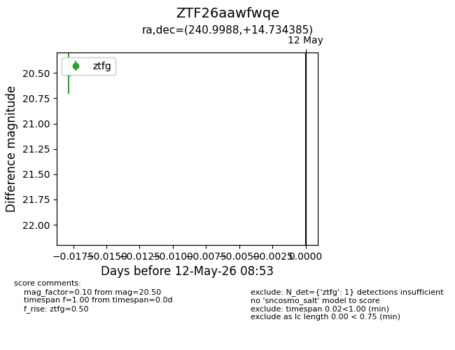
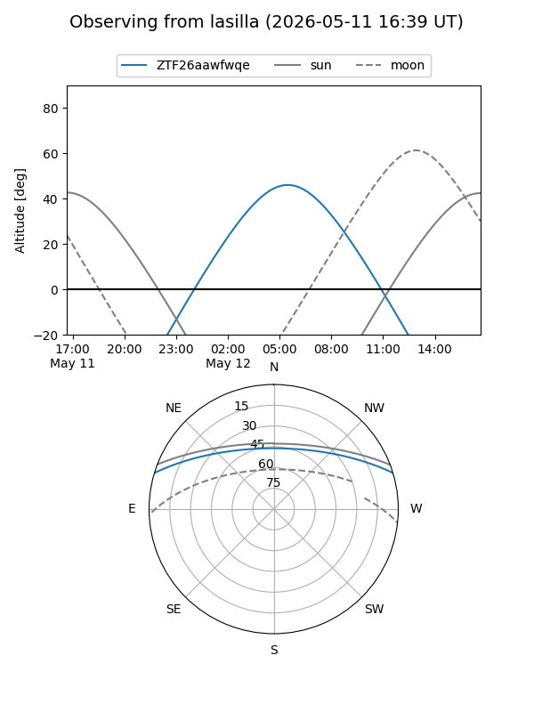
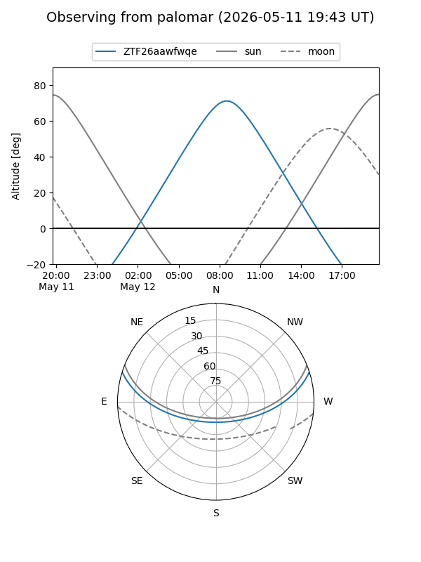

ZTF26aawfwqe
Target ZTF26aawfwqe at 2026-05-12 08:55
Aliases and brokers:
FINK: link
Lasair: link
ALeRCE: link
alt names
ZTF26aawfwqe (ztf,fink_ztf)
Coordinates:
equatorial (ra, dec) = 240.9988,+14.73438
equatorial (HMS+DMS) = 16:03:59.71,+14:44:03.78
galactic (l, b) = (27.5448,+43.65797)
Flags:
Photometry:
last ztfg=20.50
1 ztfg detections
Lightcurve

Visibility


Additional plots